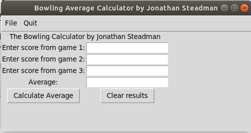
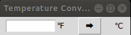
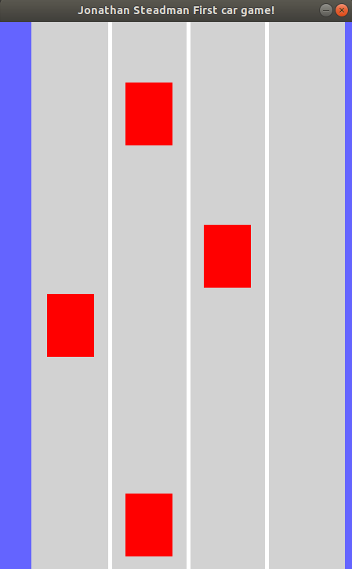
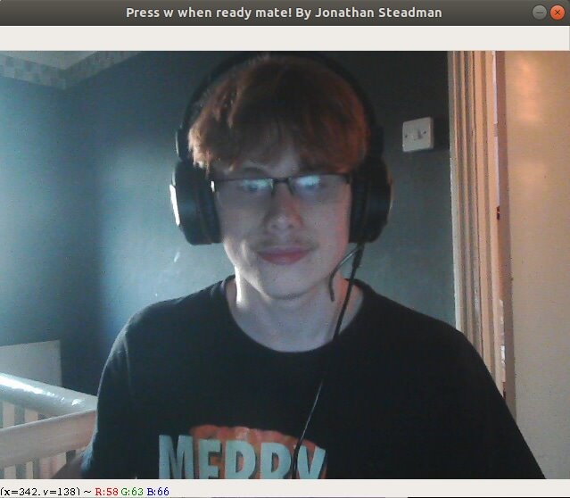
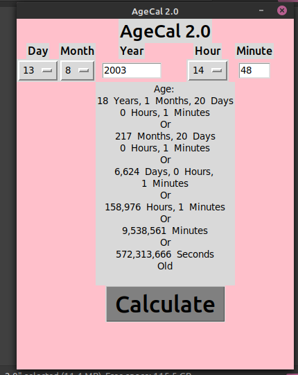

*Make sure that you make the file excutable.

This software allows users to work out their score while playing bowling. This was my first ever program I have with python.
This is a simple calculator that is used for Linux.

This software allows users to edit, save and write on the documents. Its lightweight but does lack lots of features though.

This software is used convert oF to oC temperature.

The goal of this game is to dodge the other cars that will try to take you own.

This is a simple camera app for Linux but you should have a built in one for your Linux distro as this is experimental software.

This is used to do some drawing but you cant save you work though but its great as its simple and quick to use as their is fewer features.

This is a basic color game made for Linux. You will need to write down what the text says but do not be fooled as it will trick you!

This software is used to work out what age people are for example if a person was born in 2003 then the software will tell you that they are 18 years old.

This is tic-tac-toe clone game but was made for Linux.

This is a basic To Do List software but for Linux.

This is a basic website broswer for older hardware. (You may need to run this command in the terminal to make it work with "pip install PyQt5==5.7.1").


This is tic-tac-toe clone game but was made for FreeBSD and Linux.

Color Game For Windows.

Lightwight and easy to play snake game.
*On this new site. I have only added the softwares that works only on 64 bit CPU. Which is what new computers use anyway.